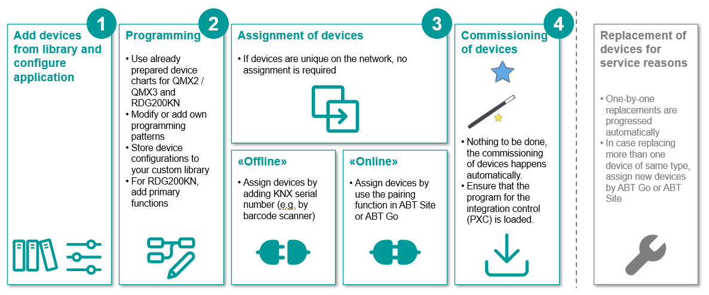

RDG2 集成工作流程
Engineering- and commissioning overview for KNX PL-Link on PXC4/5/7

Workflow RDG2 devices
1 | 定义 KNX PL-Link 拓扑的构建结构。 | |
2 | 将 PXC4/5/7 设备添加到建筑结构中。 | |
3 | Add a RDG2 device to the KNX PL-Link network. | |
4 | 配置 RDG2 设备。 | |
5 | (Optional) 配置 RDG2 窗口触点和存在探测器。 | |
6 | 配置 RDG2 加热 /cooling 线圈需求与区域。 | |
7 | 修改 RDG2 设备图表。 | |
8 | 添加 RDG2 从属设备。 | |
9 | 重复的 RDG2 设备。 | |
10 | 将序列号添加到设备（离线）或稍后在步骤 13 中在线添加。 | |
11 | (Optional) 使用窗口接触器或 /and 存在检测器调整 RDG2 设备图表。 | Adapting the RDG2 device chart with the window/presence detector contact |
12 | (Optional) 定义每个区域的加热盘管热水需求和冷却盘管冷冻水需求的汇总。 | |
13 | (Optional) 根据加热 /cooling 需求调整 RDG2 设备图表。 | |
14 | 连接设备。 | |
15 | 将配置加载到设备。 Note：ABT 站点不支持 RDG2 固件下载。 | |
16 | 使用Play按钮上网并分配序列号（如果尚未在步骤 9 中完成）。 | |
17 | 对于 Desigo CC 中 RDG2 设备的图形表示，必须定义逻辑视图的数据点。 | |
18 | EnableKNX/IP tunneling for DXR2 and PXC3 | |
19 | 并非所有交付的 RDG2 版本都支持 PXC4/5/7. 的全部功能 Note：ABT 站点不支持 RDG2 固件下载。 | |
20 | DisableKNX/IP tunneling for DXR2 and PXC3 |
- Video on YouTube: Integrating RDG200 KNX thermostats "plug & play" on Desigo PXC 4/5/7
Note: The video does not explain how to configure the subordinate devices and the heating/cooling demand. - Video RDG200KN quick configuration
Further information
- Adding and renaming RDG2 manager device
- Configuring the RDG2 application type
- Configuring a RDG2 window contact or/and presence detector
- Configuring the RDG2 heating/cooling coil demand with zones
- (Optional) Modifying the RDG2 device chart
- Adding RDG2 subordinate devices
- Duplicating RDG2 devices
- Adding the serial number to the device (offline)
- Adapting the RDG2 device chart with the window/presence detector contact
- Defining the aggregation of the demand signal
- Adapting the RDG2 device chart for heating/cooling demand
- Preparing RDG2 devices for Desigo CC graphics
- Checking the RDG2 runtime version compatibility
- Additional procedures